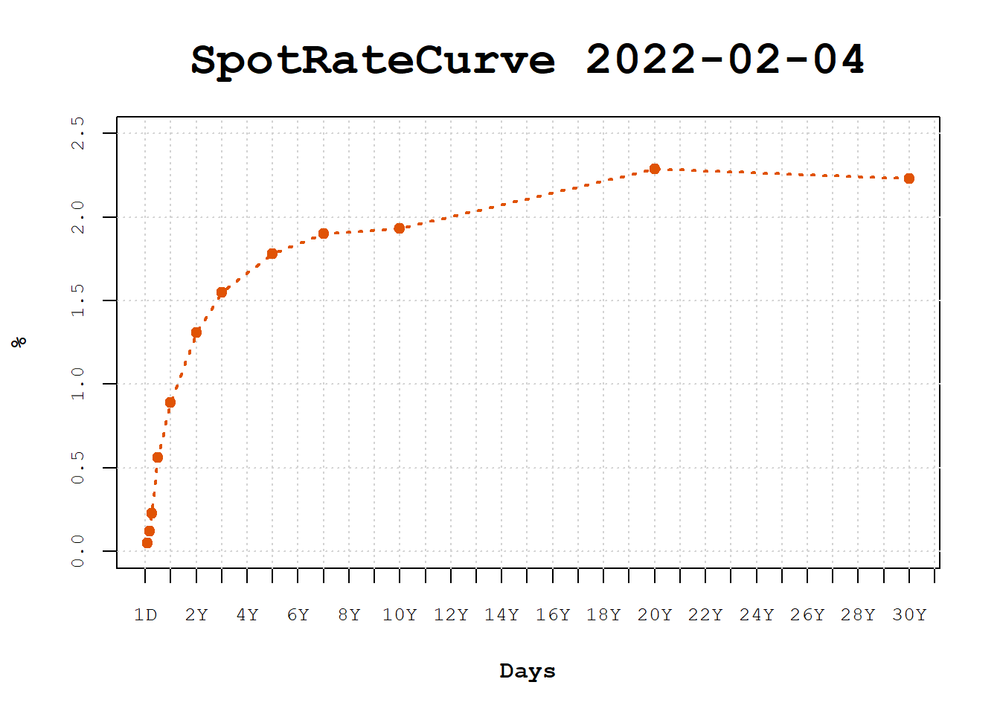

library(Quandl)
yc_all <- Quandl("USTREASURY/YIELD")A curva de juros americana é uma peça fundamental do quebra-cabeças econômico/financeiro. Neste post vamos ver como obter os dados do histórico da estrutura a termo de juros dos Estados Unidos e como construir uma curva de juros utilizando o pacote {fixedincome}.
Vamos utilizar o Quandl, que hoje é o Nasdaq Data Link, para obter o histórico de juros americanos.
Loading required package: xtsLoading required package: zoo
Attaching package: 'zoo'The following objects are masked from 'package:base':
as.Date, as.Date.numericyc_all traz todo o histórico de juros, as Constant Maturity Treasury rates, que relacionam as taxas de juros ao um conjuto de prazos padronizados: 1, 3, e 6 meses, e 1, 2, 3, 5, 7, 10, 20, e 30 anos.
head(yc_all) Date 1 MO 2 MO 3 MO 6 MO 1 YR 2 YR 3 YR 5 YR 7 YR 10 YR 20 YR 30 YR
1 2023-02-17 4.64 4.81 4.84 4.99 5.00 4.60 4.33 4.03 3.95 3.82 4.01 3.88
2 2023-02-16 4.66 4.80 4.84 4.98 4.99 4.62 4.35 4.06 3.98 3.86 4.05 3.92
3 2023-02-15 4.64 4.79 4.79 4.97 4.96 4.62 4.35 4.04 3.94 3.81 3.97 3.85
4 2023-02-14 4.63 4.78 4.80 4.98 4.99 4.60 4.32 4.00 3.90 3.77 3.94 3.81
5 2023-02-13 4.66 4.78 4.81 4.99 4.91 4.52 4.22 3.93 3.84 3.72 3.92 3.79
6 2023-02-10 4.66 4.77 4.79 4.89 4.89 4.50 4.19 3.93 3.86 3.74 3.96 3.83Vamos montar a curva de juros para uma data específica utilizando os prazos definidos no histórico.
library(tidyverse)── Attaching packages ─────────────────────────────────────── tidyverse 1.3.2 ──
✔ ggplot2 3.4.1 ✔ purrr 1.0.1
✔ tibble 3.1.8 ✔ dplyr 1.1.0
✔ tidyr 1.3.0 ✔ stringr 1.5.0
✔ readr 2.1.4 ✔ forcats 1.0.0
── Conflicts ────────────────────────────────────────── tidyverse_conflicts() ──
✖ dplyr::filter() masks stats::filter()
✖ dplyr::lag() masks stats::lag()refdate <- as.Date("2022-02-04")
yc <- yc_all |> filter(Date == refdate)
yc Date 1 MO 2 MO 3 MO 6 MO 1 YR 2 YR 3 YR 5 YR 7 YR 10 YR 20 YR 30 YR
1 2022-02-04 0.05 0.12 0.23 0.56 0.89 1.31 1.55 1.78 1.9 1.93 2.29 2.23Comecemos construindo o vetor de prazos da curva. Para isso precisamos interpretar os nomes das colunas e convertê-los em prazos.
nx <- names(yc)
terms_names <- nx[-1]
terms_names [1] "1 MO" "2 MO" "3 MO" "6 MO" "1 YR" "2 YR" "3 YR" "5 YR" "7 YR"
[10] "10 YR" "20 YR" "30 YR"Temos MO indicando prazos em meses e YR indicando os anos. Vamos utilizar uma simples substituição de texto para converter MO para months e YR para years. Dessa forma podemos utilizar a função fixedincome::as.term que converte um string em um objeto term (prazo).
library(stringr)
terms_names <- terms_names |>
str_replace("MO", "months") |>
str_replace("YR", "years")
terms_names [1] "1 months" "2 months" "3 months" "6 months" "1 years" "2 years"
[7] "3 years" "5 years" "7 years" "10 years" "20 years" "30 years"Após a conversão usamos a função purrr::map com a função fixedincome::as.term e assim vamos obter uma lista com diversos objetos term.
library(purrr)
library(fixedincome)
Attaching package: 'fixedincome'The following objects are masked from 'package:dplyr':
first, lastcurve_terms <- map(terms_names, as.term)
curve_terms[[1]]
[1] "1 month"
[[2]]
[1] "2 months"
[[3]]
[1] "3 months"
[[4]]
[1] "6 months"
[[5]]
[1] "1 year"
[[6]]
[1] "2 years"
[[7]]
[1] "3 years"
[[8]]
[1] "5 years"
[[9]]
[1] "7 years"
[[10]]
[1] "10 years"
[[11]]
[1] "20 years"
[[12]]
[1] "30 years"Obviamente tudo isso poderia ter sido feito de forma direta.
curve_terms <- nx[-1] |>
str_replace("MO", "months") |>
str_replace("YR", "years") |>
map(as.term)Pois bem, temos uma lista com prazos em meses e prazos em anos. É necessário converter os prazos para uma mesma unidade (units). Vou converter todos os prazos para dias. Para fazer isso vou criar um objeto daycount("actual/360"), que é a regra de contagem de dias que considera dias corridos e anos com 360 dias. Com a regra de contagem de dias conseguimos fazer a conversão dos prazos para anos e utilizando a quantidade de dias no ano da regra, 360, fazemos a conversão para dias.
dc <- daycount("actual/360")
terms <- curve_terms |>
map_dbl(\(x) dib(dc) * toyears(dc, x)) |>
term("days")
terms [1] "30 days" "60 days" "90 days" "180 days" "360 days"
[6] "720 days" "1080 days" "1800 days" "2520 days" "3600 days"
[11] "7200 days" "10800 days"A função fixedincome::toyears converte os prazos para um número em anos, por exemplo, 6 meses retorna 0.5, e a função dib retorna a quantidade de dias no ano para a regra, neste caso, 360. Concluímos criando os objetos de prazo com term.
Agora que já temos os prazos da curva vamos extrair as taxas do data.frame. É uma operação simples de extração de linhas de um data.frame e converter em um vetor. Fazemos uma verificação de NA por que eventualmente há podemos ter valores ausentes para alguns prazos.
rates <- yc[1, -1] |>
as.list() |>
as.numeric()
rates <- rates / 100
ix <- !is.na(rates)
rates[ix] [1] 0.0005 0.0012 0.0023 0.0056 0.0089 0.0131 0.0155 0.0178 0.0190 0.0193
[11] 0.0229 0.0223Tendo os prazos, as taxas e a data de referência, podemos construir a curva com a função fixedincome::spotratecurve. Para a curva de juros americana utilizamos taxa de juros simples (compounding simple), regra de contagem de dias (actual/360) e o calendário de dias corridos (actual).
tr_curve <- spotratecurve(
rates[ix], terms[ix],
"simple", "actual/360", "actual",
refdate = refdate
)
tr_curve SpotRateCurve
30 days 0.0005
60 days 0.0012
90 days 0.0023
180 days 0.0056
360 days 0.0089
720 days 0.0131
1080 days 0.0155
1800 days 0.0178
2520 days 0.0190
3600 days 0.0193
# ... with 2 more rows
simple actual/360 actual
Reference date: 2022-02-04 Note os prazos em dias. Agora é só visualizar a curva de forma graciosa!
plot(tr_curve)